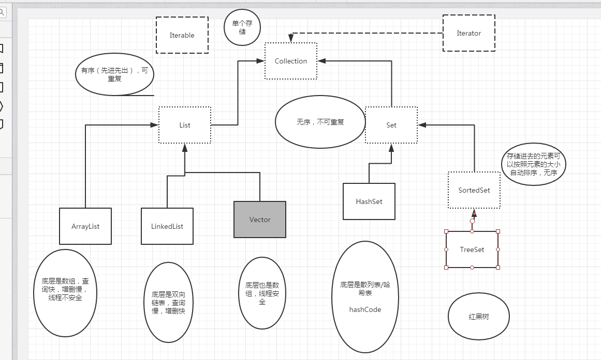

集合和数组：是一个容器，用来装东西的
区别：
数组声明他容纳的元素类型。集合不声明。这是由于集合以Object形式来存储元素的。
数组一旦创建具有固定大小，集合则可以根据需求动态改变大小。
数组是可读可写，没办法创建一个只读数组。集合提供了一个方法ReadOnly方法,该方法返回一个集合的只读版本。
集合的类型：
存储元素的方式不同分为两大类
Collection：单个存储
Map：键值对
集合中的有序代表先进先出

数组叫做遍历，集合叫做迭代，也就是遍历的意思，将集合中的内容拿出来
使用迭代器(Iterator)来迭代遍历集合
Collection的常用方法
x//声明一个对象Collection c = new ArrayList(); //其余的几种类同样也用这种方法。Collection c1 = new ArrayList();//添加c.add(1);//已经转换为了包装类型。c.add("1");c.add(true);c.add(new Date());//添加集合c.addAll(c1) //移除c.remove(xxx) //删除集合c.removeAll(c1) //删除czhongc1元素。 //清空集合 c.clear();//是否包含某个元素c.contains(1); // 返回布尔值。/* 迭代*///得到什么迭代器，完全取决于你现在用的什么集合。//collection有一个得到迭代器的方法。Iterater it = c.iterator();System.out.println(it);/* 前面使用ArrayList，结果是java.util.ArrayList$Itr@7852e922 前面使用LinkedList，结果是java.util.LinkedList$ListItr@7852e922 前面使用的是HashSet，结果是java.util.HashMap$KeyIterator@7852e922 所以这个方法取得什么迭代器和c的类型有关系。*//* 如何迭代： 1.先得到迭代器对象 2.判断还有没有下一个， 3.如果有，就拿*/while(it.hasNext()){ System.out.println(it.next());}
这些迭代器都实现了迭代器接口，并以内部类的形式在各个集合内部进行了实现。
1. Set的底层就是Map，但是set并不是map
2.Map是一种以键值对方式存储的集合，其中Map的键就是Set集合
3.如何保证添加的数据不可重复：
xxxxxxxxxx//重写equals是不够的 还得重写hashCode方法public int hashCode(){ return name.hashCode() + age; //自定义，保证不同的人有不同的code码}HashSet比较两个对象是否重复时，会先比较hashcode，再比较内容。
xxxxxxxxxx/* 1. hash值得作用 2. 为什么要重写hashCode 3. 回顾了equals方法的重写 4. HashSet中的元素去重需要注意的点。*/xxxxxxxxxxpublic class Student { public String name; public int age; public int IDnum; public char sex; //构造方法 public Student(String name,int age , int IDnum,char sex) { this.name = name; this.age = age; this.IDnum = IDnum; this.sex = sex; } //重写hashCode方法，在集合内部调用的时候用得上 public int hashCode() { return this.name.hashCode() + this.age + IDnum + sex; } //重写equals方法 public boolean equals(Object o) { if(this == o) { return true; } //判断是否是student if(o instanceof Student) { Student s = (Student) o; //对比属性是否一致 if(this.name == s.name && this.age == s.age && this.IDnum == s.IDnum && this.sex == s.sex) { return true; } } return false; } //重写toString方法 public String toString() { return "我是好孩子"; } }//测试类public static void main(String[] args) { Set set = new HashSet(); Student st1 = new Student("xx",18,15246,'男'); Student st2 = new Student("xx",18,15246,'男'); Student st3 = new Student("xx",18,15246,'男'); Student st4 = new Student("xx",18,15246,'男'); set.add(st1); set.add(st2); set.add(st3); set.add(st4); Iterator it = set.iterator(); while(it.hasNext()) { System.out.println(it.next()); //只输出一个。 }}sortedSetSortedSet是set下的一个子接口，他有一个实现类TreeSet
特点：可以自动排序,且可以去重
xxxxxxxxxx//排列方式以字母顺序排列 UNICODE码SortedSet set1 = new TreeSet(); set1.add("xx"); set1.add("JJ"); set1.add("jj"); set1.add("ZZ"); set1.add("aa"); set1.add("AA"); set1.add("我"); set1.add("AA"); set1.add("AA"); set1.add("JX"); Iterator it1 = set1.iterator(); while(it1.hasNext()) { System.out.print(it1.next()+" "); }//AA JJ JX ZZ aa jj xx 我 //没有重复的SortedSet set = new TreeSet(); set.add(1); set.add(123); set.add(12); set.add(1344); set.add(12); set.add(12); set.add(12); set.add(1323); set.add(112); Iterator it = set.iterator(); while(it.hasNext()) { System.out.print(it.next() + " "); }//1 12 112 123 1323 1344 a想要SortedSet中的元素可排列，则该类元素必须是可比较的
让一个类变得可比较的方法：
实现Comparable接口，目的是让类变得可比较。需要重写compareTo方法，也就是指定该类的比较规则
xxxxxxxxxxpublic class Student1 { public String name; public int age; public Student1(String name , int age) { this.name = name; this.age = age; }}Student1 stu1 = new Student1("xx",20);Student1 stu2 = new Student1("cx",10);SortedSet ss = new TreeSet();ss.add(stu1);ss.add(stu2);Iterator it = ss.iterator();while(it.hasNext()) { System.out.println(it.next()); //Exception}/* 出现异常时因为JVM不知道应该拿什么属性来比较，为了避免这个，需要重写Comparable接口的方法，也就是上面所写的内容。*/xxxxxxxxxx//重写public int compareTo(Object o) { //比较的规则 //第一种，以name为例子 String name1 = ((Student1)(o)).name; String name2 = this.name; return name2.compareTo(name1);}//以name为例，那么排列就是用的name，根据name比较的大小，如果返回是正数，那么返回的结果就是降序，如果返回是负数，那么就是升序单独写一个比较器。
Comparator，然后只需要实现其中的一个方法，compare方法，这个方法传入两个参数(方法充当裁判的角色)，对两个参数进行对比。xxxxxxxxxxclass MyComparator implements Comparator{ //有很多其他的方法，但是只需要实现这一个方法就可以了 public int comapre(Object o1,Object o2){ int age1 = ((Person)o1).age; int age2 = ((Person)o2).age; }}//叫裁判MyComparator mc =new MyComparator();SortedSet set = new TreeSet(mc); // 可以传入一个比较器。//这里用SortedSet是因为面向抽象/接口/父类编程。//以后学习编程要尽量使用面向接口编程。//只要是子类，那么以后修改的时候只要是子类，实现类，那么都可以改//可以使用匿名内部类来实现一个接口 , 但是不能复用。SortedSet set = new TreeSet(new Compatator(){ public int comapre(Object o1,Object o2){ int age1 = ((Person)o1).age; int age2 = ((Person)o2).age; }});增强for循环的语法
xxxxxxxxxxfor(遍历出来的类型 变量名:数组名/集合名){ }1.如果集合想要使用增强for循环，则这个集合需要使用泛型，如果集合不使用泛型，那么用来接收的类型必须是Object
2.增强for循环的缺点：没有下标
xxxxxxxxxxint [] ss = {1,2,3,4,5,6,7};//1for(int i=0;i<ss.length;i++){ //代码}//foreachfor(int i:ss){ //i表示每一项，但是无法接受下标。}//遍历二维数组String [][] s = {{"1","2"},{"2","4"}};for(String[] arr:s){ //arr代表每一个一维数组,所以类型为String[] for(String num:arr){ }}xxxxxxxxxxMap map = new HashMap();//Map 和Collection是兄弟关系，Collection的方法不一定适用于Map//添加元素map.put(key,value); /*// 键值对，键唯一，由程序员随便起，类型也可以随便起（Object），值可以重复*///获得元素map.get(key);//如何遍历map集合************************Set set = map.keySet(); //通过keySet方法得到一个键的集合之后用迭代器再迭代出来Iterator it = set.iterator();while(it.hasNext()){ System.out.println(it.next()); Object o = it.next(); Object o1 = map.get(o); System.out.println("key---->"+o+" value---->"+o1);}************************java中的泛型：
xxxxxxxxxx//list1中只能添加String类型的数据。List list = new ArrayList(); // 没有加泛型，类似于加了一个ObjectList<String> list1 = new ArrayList();//键值对，所以有两个。Map<Integer,String> map = new HashMap();
为什么要用泛型：
优点：
缺点：
新特性就一定是好的么？有好有坏吧。